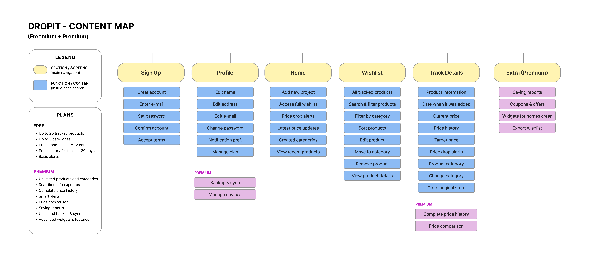

Projeto 014
Dropit
Visão geral
Interface de um aplicativo para acompanhar produtos e listas de desejos.
- Área
- UX Design
- Ano
- 2026
O que foi desenvolvido
Neste projeto, desenvolvi o Dropit, um aplicativo mobile de lista de desejos universal e monitoramento automatizado de preços, criado como parte da especialização em UI / UX Design do California Institute of the Arts (CalArts).
A aplicação elimina a rotina fragmentada de pesquisar produtos em múltiplos e-commerces e controlar descontos manualmente. O Dropit centraliza links de qualquer loja online em um único lugar, mapeia a oscilação histórica de valores e envia notificações quando o produto atinge o preço-alvo definido pelo usuário. A interface foi planejada para oferecer um cadastro de itens em até três toques, combinando hierarquia visual limpa e dados financeiros de fácil leitura.
Aprendizados e Técnicas
O desenvolvimento do Dropit permitiu aprofundar conceitos de experiência do usuário e design de produto voltados para utilidade e retenção:
- Arquitetura de Informação e Mapeamento: estruturação do fluxo completo no Content Map, garantindo navegação intuitiva entre Splash, Home, cadastro de link e wishlist, além da diferenciação clara entre recursos Free e Premium.
- Fluxos de Interação Sem Fricção (UX): concepção de uma entrada de dados otimizada, com botão global de adição rápida, automação do nome do produto e alertas inteligentes de preço-alvo.
- Design de Interface Neutra (UI): criação de componentes coerentes e padronizados no Figma, mantendo a consistência em feeds com fotos e informações importadas de e-commerces de identidades distintas.
- Visualização de Dados: organização estratégica do histórico de preços em linhas do tempo e gráficos claros, ajudando a identificar descontos reais e tendências de mercado.
Habilidades
Momentos do projeto
O desenvolvimento foi apoiado por mapas que organizaram o conteúdo e detalharam os principais fluxos de interação da experiência.
